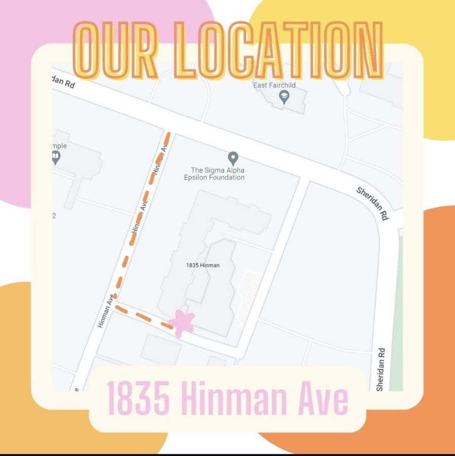

Volunteer a shift
Recover, prep or deliver, whenever fits your week.
Pick a shift →CKNU · Student-run at Northwestern
We take surplus food that was never served, from Northwestern dining and local partners, and turn it into free meals for Evanston's community fridges.
Updated live from our kitchen log. Meals before fall 2025, when we started counting them, are estimated from pounds rescued.
We pick up food that's unused and unserved, never plate scraps or salad bar leftovers, from campus dining and partners like Hillel and Meals on Wheels Northeast Illinois.
Volunteers portion, package and label it as meals in our prep kitchen.
Meals go into community fridges across Evanston.
1835 Hinman Avenue, Evanston
Wear long pants and closed-toe shoes; we'll give you gloves and a hairnet. Can't find us? Text your shift lead (their number is on the sign-up sheet).
Directions to 1835 Hinman
Our meals go into five Evanston Community Fridges. They're open 24/7 and free for anyone: take what you need, leave what you can.
1601 Payne Street
at Soul & Smoke
1335 Dodge Avenue
at Childcare Network of Evanston
620 Madison Street
at Reba Place Church
1928 Darrow Avenue
at St. Andrew's Church
615 Church Street (in the alley)
at the Woman's Club of Evanston
More about the fridges at evanstoncommunityfridges.com.
CKNU runs on student volunteers. No experience needed: if you can put on gloves and a hairnet, you're in. Shifts are at our kitchen at 1835 Hinman Avenue (how to find it).
Recover, prep or deliver, whenever fits your week.
Pick a shift →Run shifts, keep food safe, and train new volunteers.
Ask about leading →Have surplus food or supplies to give? We'd love to hear from you.
Get in touch →Exec board applications open once a year; we announce them on Instagram.